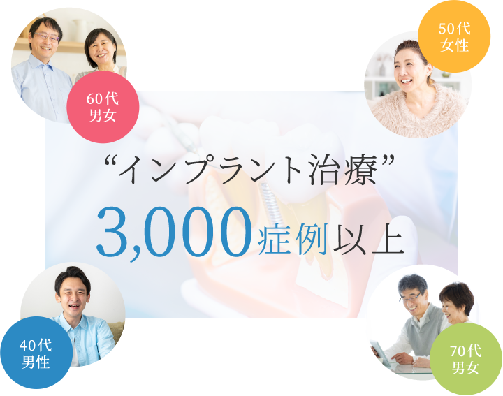
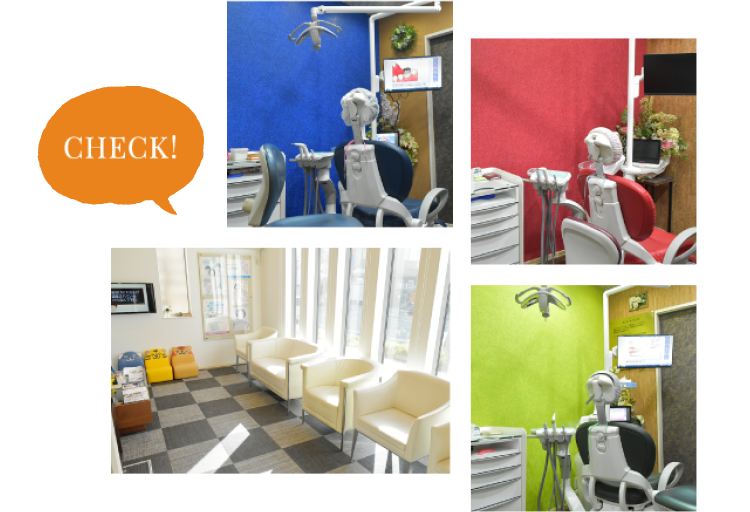

〒678-0239 兵庫県赤穂市加里屋57-5
〒678-0239 兵庫県赤穂市加里屋57-5
PARKING
駐車場18台完備
広々とした空間の駐車場を
ご用意しております
CONCEPT
赤穂の患者様に
“心から頼られる歯医者さん”
でありたい
「患者様の治療時のご負担を軽減したい」「一人ひとりに適した、よりよい治療をご提供したい」当院ではそういった思いを元に、診療体制・環境を整えています。こちらでは当院の特長を5つご紹介します。
01
“いたい、こわい”そんな想いを
できるだけ和らげる治療を
歯医者への恐怖心をなくせるよう、できるだけ痛みの少ない治療を心がけています。麻酔は豊富な種類をご用意し、患者様ごとに変えたり、ご希望があれば麻酔科医を呼んだりすることも可能。「苦痛が軽減された」と患者様にも好評です。
02
治療に自信があるからこそ
たくさんの方々の
信頼を
得ています

近年はインプラント治療に力を入れ、その実績は3,000症例以上。歯科用CTをはじめとする先端機器を備え、治療前の正確な診断はもちろん、精密な治療を実現しています。お話をじっくり伺うのはもちろん、わかりやすいご説明も欠かしません。
“インプラント治療”
3,000症例以上
03
質の高い治療を実現する
“充実の設備”
日々進歩する新しい技術習得のため、研鑽を怠らないのはもちろん、質の高い治療を実現する設備環境の整備にも力を入れています。歯科用CTやレーザー治療器、セレックシステムをはじめ先端設備を積極的に導入し、体制を整えています。
CLINIC
患者様が快適に
過ごしていただける
“環境作り”を心掛けています

この文章はダミーです。文字の大きさ、量、字間、行間等を確認するために入れています。この文章はダミーです。文字の大きさ、量、字間、行間等を確認するために入れています。この文章はダミーです。文字の大きさ、量、字間、行間等を確認するために入れています。この文章はダミーです。文字の大きさ、量、字間、行間等を確認するために入れています。
News
お知らせ
- 2021.00.00
- タイトルがはいりますタイトルがはいりますタイトルがはいります
- 2021.00.00
- タイトルがはいりますタイトルがはいりますタイトルがはいります
- 2021.00.00
- タイトルがはいりますタイトルがはいりますタイトルがはいります